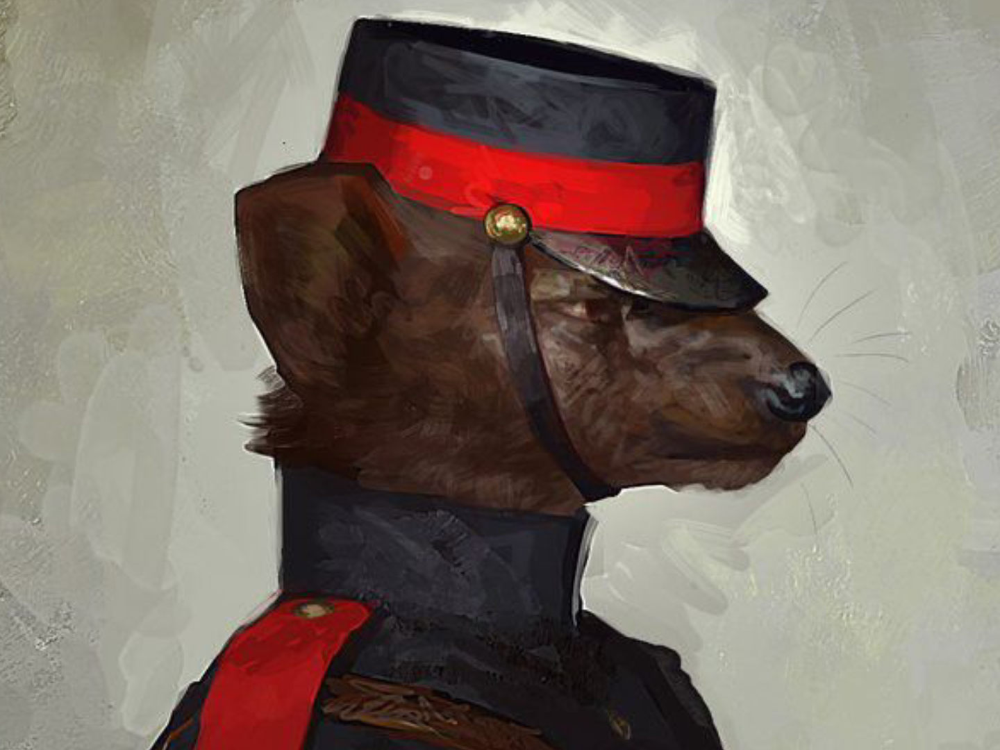

Grande porte
Qualquer aberrado que seja grande (até insetos....)
- Força+4
- Resistência+5
- Intimidação+3
- Furtividade−5
- Fuga−3
- Mental−4
Personalidade Geral Os aberrados de porte grande são excessivamente enraivecidos e estressados.

O termo "Aberrado" é um termo até então considerado pejorativo em locais como cidades/vilas apenas de Aberrados, sendo assim os mesmos preferem serem chamados de Animálios.Qualquer aberrado que seja grande (até insetos....)
Personalidade Geral Os aberrados de porte grande são excessivamente enraivecidos e estressados.
Qualquer aberrado de tamanho mediano (até insetos)
Personalidade Geral Os Aberrados de porte médio são os mais emocionalmente controlados, costumam ser os mais raros.
Qualquer aberrado pequeno (até insetos obviamente)
Personalidade Geral Os Aberrados de porte pequeno são desmedidamente covardes, extremamente assustados.